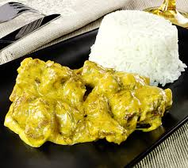

Colombo de porc

Variante exotique du curry indien, le colombo est emblématique de la cuisine antillaise. Vous n'y avez encore jamais plongé votre viande, vos légumes, vos oignons et vos pommes de terre ? N'attendez pas pour préchauffer le four et faire vrombir le feu sous la cocotte : le colombo de porc moelleux aux légumes fondants, vous allez adorer ça !
Préparation:40 minutes Cuisson:90 minutes Repos:30 minutes Total:130 minutes
Ingrédients pour 6 personnes
- 1,5 kg Epaule de porc
- 3 Courgette(s)
- 1 Aubergine(s)
- 500 gr Pomme(s) de terre
- 3 Echalote(s)
- 4 Oignon(s)
- 1 c. à café Graine de cumin
- 1 morceau(x) Piment
- 3 c. à soupe Colombo
- 1 cube(s) Bouillon de volaille
- 3 c. à soupe Huile végétale
- 1 feuille Laurier
- 1 Citron(s) vert(s)
- 2 branche(s) Persil plat
Pour la marinade
- 1 c. à café Colombo
- 1 Citron(s) vert(s)
- 2 gousse(s) Ail
- 3 c. à soupe Huile végétale
- Sel & Poivre
Préparation
- Commencez par la préparation de la viande : tranchez le porc en morceaux d'environ 5 cm, mettez ces derniers dans un saladier, puis assaisonnez-les avec le jus de citron vert, les gousses d'ail pelées et hachées, l'huile végétale et la poudre de colombo. Mélangez afin de bien enrober les morceaux de viande, puis couvrez et laissez mariner le tout à température ambiante pendant 30 min.
- Pendant ce temps, préparez les légumes : pelez les pommes de terre et tranchez-les en deux, coupez les extrémités des courgettes puis tranchez-les en gros tronçons, tranchez les extrémités des aubergines puis débitez-les en cubes, pelez les oignons et les échalotes et émincez-les grossièrement. Émincez le morceau de piment antillais.
- Quand la viande a suffisamment mariné, préchauffez le four à 150°C (th.5) et mettez à chauffer dans une casserole le cube de bouillon de volaille dans 75 cl d'eau. Puis faites chauffer 2 c. à soupe d'huile végétale dans une cocotte ou une sauteuse, puis faites-y revenir les graines de cumin, pendant 1 min à feu vif.
- Ensuite, faites dorer la viande en deux fois (d'abord une moitié, puis l'autre), pendant environ 2 min, puis retirez-la de la cocotte à l'aide d'une écumoire et déposez-la dans un plat. Ajoutez alors 1 c. à soupe d'huile végétale dans le fond de la cocotte, et faites-y revenir (à feu doux et durant 5 min) les échalotes et les oignons, en les remuant régulièrement. Parfumez ensuite avec le colombo, le piment et une louche de bouillon de volaille, puis remuez bien.
- Ajoutez alors la viande, et mélangez. Incorporez pour finir les légumes, et tout le reste du bouillon. Aromatisez avec le laurier et portez le tout à ébullition. Couvrez la cocotte, mettez-la dans le four, et laissez le colombo de porc mijoter pendant 1h30.
- Quand il est cuit, retirez la viande, les légumes et le laurier de la cocotte le temps de peaufiner la sauce : écrasez quelques morceaux de pommes de terre dans le bouillon puis mettez la cocotte sur le feu, et faites la chauffer environ 10 min à feu vif et à découvert, de façon à la faire légèrement réduire. Rectifiez l'assaisonnement en sel et poivre, puis remettez la viande et les légumes dans la cocotte, mélangez, puis servez le colombo parsemé de persil ciselé et de quartiers de citron vert, et accompagné de riz créole.
Conseil nutrition
Si vous voulez variez les plaisirs, vous pouvez réaliser la même recette avec des émincés de volaille ou de poisson (il est inutile de poêler ce dernier avant de le cuire). Et si vous voulez apporter une saveur sucrée à votre recette, ajoutez des morceaux d'ananas frais
Astuces
Si vous voulez variez les plaisirs, vous pouvez réaliser la même recette avec des émincés de volaille ou de poisson (il est inutile de poêler ce dernier avant de le cuire). Et si vous voulez apporter une saveur sucrée à votre recette, ajoutez des morceaux d'ananas frais.
Retour page d'accueil